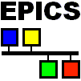

State Notation Language and Sequencer¶
- Maintainer
Ben Franksen <benjamin.franksen@helmholtz-berlin.de>
- Co-Maintainer
Freddie Akeroyd <freddie.akeroyd@stfc.ac.uk>
- Bug Reports
- Version
2.2
This page is a mirror of https://www-csr.bessy.de/control/SoftDist/sequencer/ while the BESSY site is offline.
Welcome to the home page of the EPICS Sequencer project.
This project is a component of the Experimental Physics and Industrial Control System (EPICS), a set of tools, libraries and applications developed collaboratively and used worldwide to create distributed soft real-time control systems for large scale scientific instruments.
The State Notation Language (SNL), is a domain specific programming language that smoothly integrates with and depends and builds on EPICS base. This project defines SNL and provides an implementation, consisting of the SNL compiler and runtime system.
The Sequencer is free software, licensed under the EPICS Open License.
For further information
take a look at the Overview to get a first impression of the Sequencer’s features.
This talk about version 2.1 of the Sequencer contains a short introduction to SNL, including a walk through a simple example program to illustrate the basic concepts.
A (slightly out-dated) Tutorial is also available,
as well as a detailed SNL Reference for Version 2.2,
and instructions for download and Download and Installation.
All of these are part of the Users’ Guide.
This page describes version 2.2 and the documentation, in particular the language reference, has been updated to reflect the changes between 2.1 and 2.2. For older versions, please refer to the old version of this page.